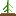


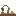
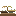
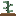
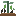


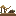

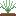


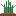

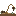
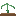
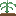
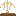


Fuente: modelos/iconos2d/iconos2d.py. Fondo gris azulado para ver la transparencia; la columna clara muestra a 32 px sobre blanco.
| Cultivo | siembra | brote | crecimiento | madurez | podrida |
|---|---|---|---|---|---|
| Maíz | | | | ||
| Frijol | | | | | |
| Calabaza | | | |||
| Chile | | | | | |
| Sorgo | | |  | ||
| Sandía | | ||||
| Camote | | | | ||
| Cacahuate | | | | | |
| Soya | |  | |||
| Frijol caupí |  | ||||
| Haba |  |  | | ||
| Chícharo | | | | | |
| Lenteja | | | | | |
| Ejote | | | |  | |
| Cebada | |  | | | |
| Trigo | | |  | |  |
| Avena |  |  |  | | |
| Maíz dulce | | | |